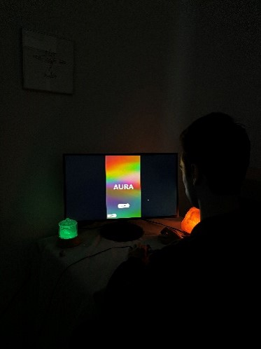
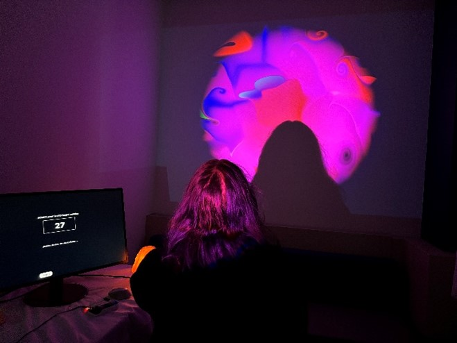
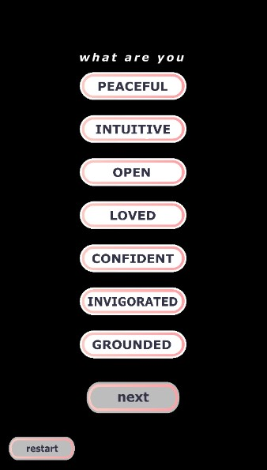
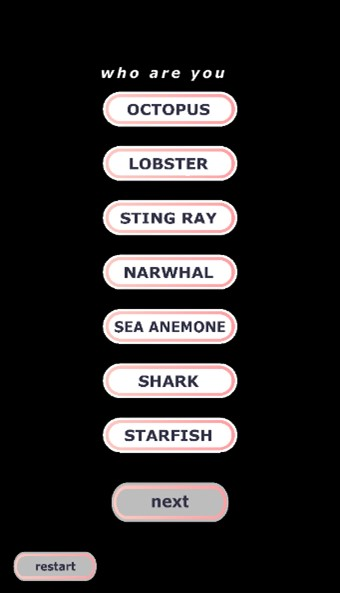

AURA
Abby Vendura
AURA is a magic mirror designed for users to gain a deeper understanding of themselves and to see themselves in a different way- through shape and color, with their silhouette superimposed through projection. The user experience started before they sat down. The space was curtained off, the table was donned with an oil diffuser, Himalayan salt lamp, and crystals. The curtains created a sense of an individual experience for the user; dark, calm, and intimate, like that of a booth at a festival.



